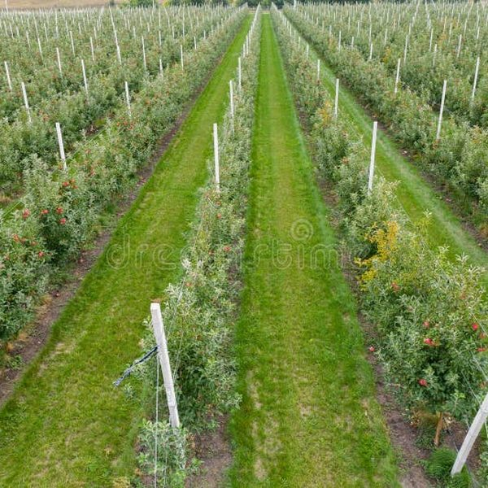
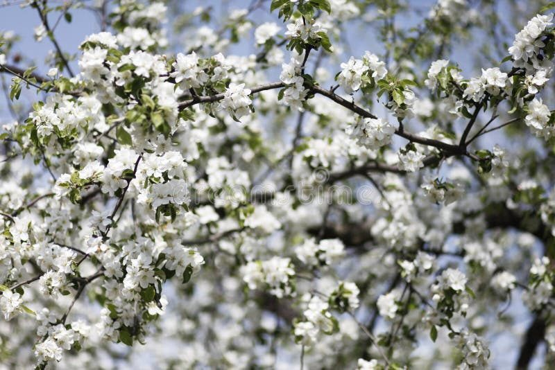
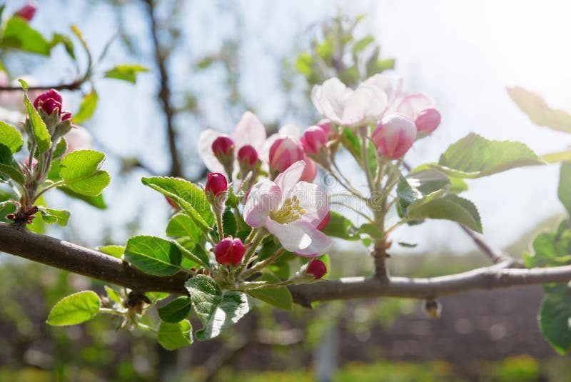
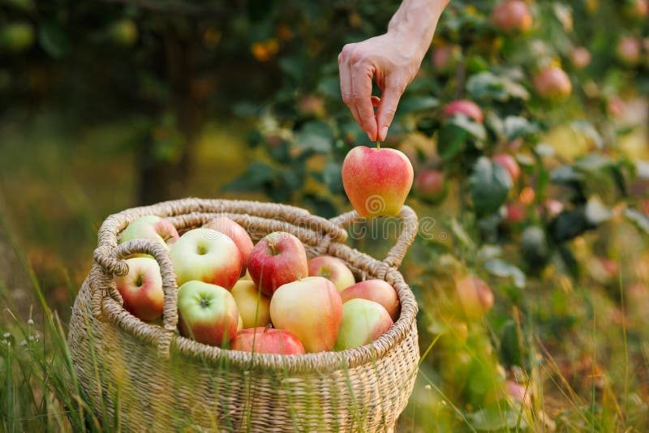
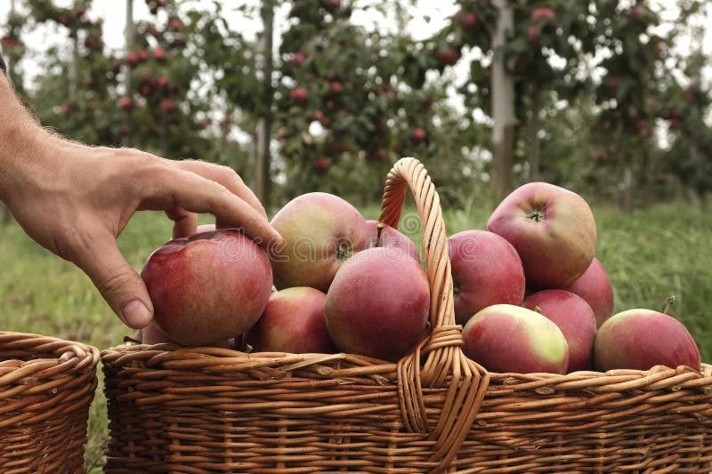
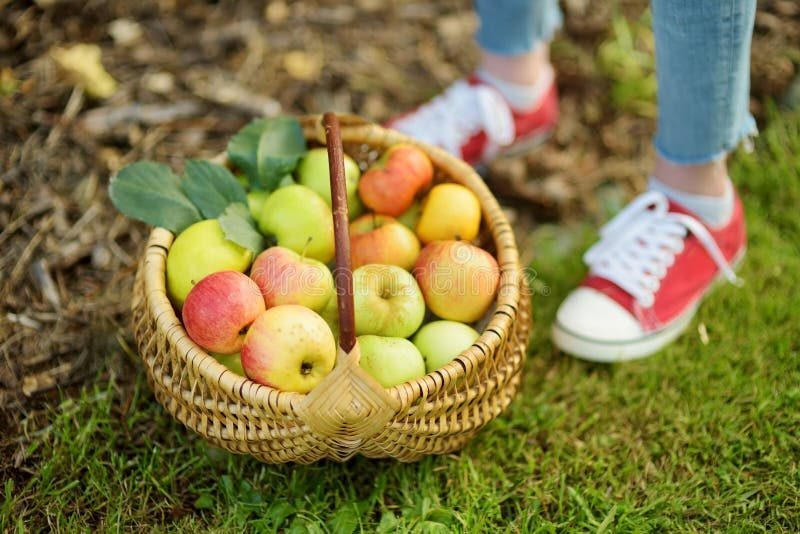
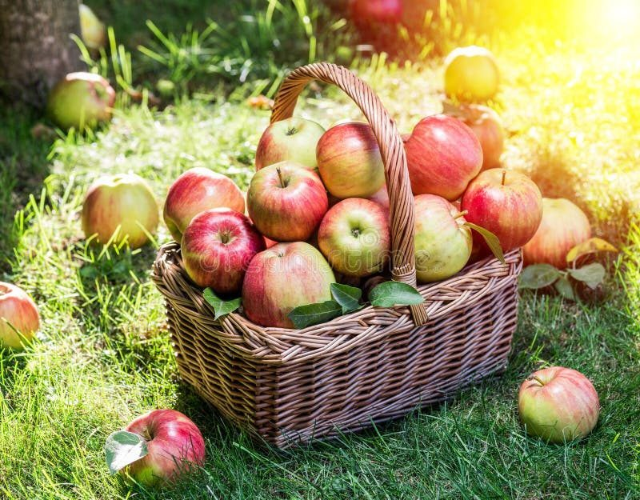

<!DOCTYPE html>
<html lang="zh-CN">
<head>
  <meta charset="UTF-8">
  <meta name="viewport" content="width=device-width, initial-scale=1.0, maximum-scale=1.0, user-scalable=no">
  <title>苹果数字履历 - 产品溯源</title>
  <link rel="stylesheet" href="../applefarm_mobile/css/mobile-design-system.css">
  <style>
    /* ========== 页面专属样式 ========== */
    /* 溯源头部 */
    .trace-header {
      background: var(--gradient-header);
      padding: calc(var(--safe-top) + 12px) var(--space-4) var(--space-5);
      color: var(--text-on-primary);
      border-radius: 0 0 var(--radius-xl) var(--radius-xl);
      box-shadow: var(--shadow-header);
      position: relative;
      overflow: hidden;
    }
    .trace-header::before {
      content: '';
      position: absolute;
      top: -30%; right: -15%;
      width: 70%; height: 120%;
      background: radial-gradient(ellipse, rgba(255,255,255,0.10) 0%, transparent 70%);
      pointer-events: none;
    }
    .trace-header > * { position: relative; z-index: 1; }
    .trace-back {
      width: 36px; height: 36px;
      background: rgba(255,255,255,0.2);
      border-radius: var(--radius-md);
      display: flex; align-items: center; justify-content: center;
      cursor: pointer;
      margin-bottom: var(--space-3);
    }
    .trace-back:active { background: rgba(255,255,255,0.3); }
    .trace-title { font-size: var(--font-xl); font-weight: var(--font-bold); margin-bottom: var(--space-1); }
    .trace-subtitle { font-size: var(--font-sm); opacity: 0.85; }

    /* 溯源信息卡 */
    .trace-product {
      background: var(--bg-white);
      border-radius: var(--radius-xl);
      padding: var(--space-4);
      margin: calc(var(--safe-top) + var(--space-4)) var(--space-4) var(--space-4);
      position: relative;
      z-index: 1;
      box-shadow: var(--shadow-lg);
      display: flex; gap: var(--space-4);
    }
    .trace-product-img {
      width: 90px; height: 90px;
      border-radius: var(--radius-lg);
      background: var(--primary-50);
      display: flex; align-items: center; justify-content: center;
      font-size: 48px;
      flex-shrink: 0;
    }
    .trace-product-info { flex: 1; }
    .trace-product-name { font-size: var(--font-md); font-weight: var(--font-bold); color: var(--text); margin-bottom: var(--space-1); }
    .trace-product-batch { font-size: var(--font-xs); color: var(--text-secondary); font-family: var(--font-family-mono); }
    .trace-product-tags { display: flex; gap: var(--space-1); margin-top: var(--space-2); flex-wrap: wrap; }

    /* 溯源时间线 */
    .timeline { padding: var(--space-4); }
    .timeline-item {
      display: flex;
      gap: var(--space-3);
      position: relative;
      padding-bottom: var(--space-5);
    }
    .timeline-item:last-child { padding-bottom: 0; }
    .timeline-dot-line {
      display: flex;
      flex-direction: column;
      align-items: center;
      flex-shrink: 0;
    }
    .timeline-dot {
      width: 12px; height: 12px;
      border-radius: var(--radius-full);
      background: var(--primary);
      box-shadow: 0 0 0 4px var(--primary-100);
      flex-shrink: 0;
      z-index: 1;
    }
    .timeline-dot.pending { background: var(--gray-400); box-shadow: 0 0 0 4px var(--gray-100); }
    .timeline-line {
      width: 2px;
      flex: 1;
      background: var(--border);
      margin-top: 4px;
    }
    .timeline-item:last-child .timeline-line { display: none; }
    .timeline-content {
      flex: 1;
      background: var(--bg-white);
      border-radius: var(--radius-lg);
      padding: var(--space-3);
      border: 1px solid var(--border);
      min-width: 0;
      cursor: pointer;
      transition: all var(--transition-fast);
    }
    .timeline-content:active { transform: scale(0.98); border-color: var(--primary-200); }
    .timeline-label {
      font-size: var(--font-sm);
      font-weight: var(--font-semibold);
      color: var(--text);
      margin-bottom: var(--space-0.5);
      display: flex; align-items: center; gap: var(--space-2);
    }
    .timeline-time { font-size: var(--font-xs); color: var(--text-tertiary); }
    .timeline-desc { font-size: var(--font-sm); color: var(--text-secondary); line-height: 1.5; }
    .timeline-thumb {
      width: 100%;
      height: 80px;
      border-radius: var(--radius-md);
      overflow: hidden;
      margin-top: var(--space-2);
    }
    .timeline-thumb img {
      width: 100%;
      height: 100%;
      object-fit: cover;
    }
    .timeline-detail-btn {
      font-size: var(--font-xs);
      color: var(--primary);
      margin-top: var(--space-2);
      display: flex;
      align-items: center;
      gap: var(--space-1);
    }
    .timeline-detail-btn svg { width: 12px; height: 12px; }
  </style>
</head>
<body>
  <div class="mb-app">
    <!-- 产品信息卡 -->
    <div class="trace-product">
      <div class="trace-product-img"></div>
      <div class="trace-product-info">
        <div class="trace-product-name" id="productName">花牛苹果</div>
        <div class="trace-product-batch" id="productBatch">批次号: —</div>
        <div class="trace-product-origin" id="productOrigin" style="font-size:12px;color:#8b9a8b;margin:2px 0 6px;"></div>
        <div class="trace-product-tags" id="productTags">
          <span class="mb-tag success">有机认证</span>
          <span class="mb-tag info">绿色食品</span>
          <span class="mb-tag warning">可追溯</span>
        </div>
      </div>
    </div>

    <!-- 溯源码 -->
    <div class="mb-section" style="padding-top:0;">
      <div style="font-size:12px;color:#8b9a8b;">溯源码：<span id="codeText">—</span></div>
    </div>

    <!-- 溯源时间线 -->
    <div class="mb-section">
      <div class="mb-section-title"><span class="mb-section-dot"></span>溯源信息</div>
    </div>
    <div class="timeline" id="timelineBox">
      <div class="timeline-item">
        <div class="timeline-dot-line">
          <div class="timeline-dot"></div>
          <div class="timeline-line"></div>
        </div>
        <div class="timeline-content" onclick="showTraceDetail('planting')">
          <div class="timeline-label">
            <span>🌱 种植管理</span>
            <span class="timeline-time">2026.09.15</span>
          </div>
          <div class="timeline-desc">A1区花牛苹果果园，有机种植，施用有机肥</div>
          <div class="timeline-thumb">
            
          </div>
          <div class="timeline-detail-btn">点击查看详情<svg viewBox="0 0 24 24" fill="none" stroke="currentColor" stroke-width="2"><path d="M9 18l6-6-6-6"/></svg></div>
        </div>
      </div>
      <div class="timeline-item">
        <div class="timeline-dot-line">
          <div class="timeline-dot"></div>
          <div class="timeline-line"></div>
        </div>
        <div class="timeline-content" onclick="showTraceDetail('pruning')">
          <div class="timeline-label">
            <span>✂️ 修剪疏果</span>
            <span class="timeline-time">2026.09.20</span>
          </div>
          <div class="timeline-desc">完成春季修剪和第一次疏果，保留优质果</div>
          <div class="timeline-thumb">
            
          </div>
          <div class="timeline-detail-btn">点击查看详情<svg viewBox="0 0 24 24" fill="none" stroke="currentColor" stroke-width="2"><path d="M9 18l6-6-6-6"/></svg></div>
        </div>
      </div>
      <div class="timeline-item">
        <div class="timeline-dot-line">
          <div class="timeline-dot"></div>
          <div class="timeline-line"></div>
        </div>
        <div class="timeline-content" onclick="showTraceDetail('bagging')">
          <div class="timeline-label">
            <span>🛡️ 套袋保护</span>
            <span class="timeline-time">2026.09.18</span>
          </div>
          <div class="timeline-desc">使用双层纸袋套袋，防止虫害和农药污染</div>
          <div class="timeline-thumb">
            
          </div>
          <div class="timeline-detail-btn">点击查看详情<svg viewBox="0 0 24 24" fill="none" stroke="currentColor" stroke-width="2"><path d="M9 18l6-6-6-6"/></svg></div>
        </div>
      </div>
      <div class="timeline-item">
        <div class="timeline-dot-line">
          <div class="timeline-dot"></div>
          <div class="timeline-line"></div>
        </div>
        <div class="timeline-content" onclick="showTraceDetail('fertilizer')">
          <div class="timeline-label">
            <span>🌿 施肥喷药</span>
            <span class="timeline-time">2026.09.25</span>
          </div>
          <div class="timeline-desc">使用生物有机肥和绿色农药，确保果实安全</div>
          <div class="timeline-thumb">
            
          </div>
          <div class="timeline-detail-btn">点击查看详情<svg viewBox="0 0 24 24" fill="none" stroke="currentColor" stroke-width="2"><path d="M9 18l6-6-6-6"/></svg></div>
        </div>
      </div>
      <div class="timeline-item">
        <div class="timeline-dot-line">
          <div class="timeline-dot"></div>
          <div class="timeline-line"></div>
        </div>
        <div class="timeline-content" onclick="showTraceDetail('testing')">
          <div class="timeline-label">
            <span>🔬 农残检测</span>
            <span class="timeline-time">2026.09.10</span>
          </div>
          <div class="timeline-desc">农残检测合格，符合绿色食品标准</div>
          <div class="timeline-thumb">
            
          </div>
          <div class="timeline-detail-btn">点击查看详情<svg viewBox="0 0 24 24" fill="none" stroke="currentColor" stroke-width="2"><path d="M9 18l6-6-6-6"/></svg></div>
        </div>
      </div>
      <div class="timeline-item">
        <div class="timeline-dot-line">
          <div class="timeline-dot"></div>
          <div class="timeline-line"></div>
        </div>
        <div class="timeline-content" onclick="showTraceDetail('harvest')">
          <div class="timeline-label">
            <span>🍎 采摘入库</span>
            <span class="timeline-time">2026.09.12</span>
          </div>
          <div class="timeline-desc">人工采摘，精选一级果，全程冷链保鲜</div>
          <div class="timeline-thumb">
            
          </div>
          <div class="timeline-detail-btn">点击查看详情<svg viewBox="0 0 24 24" fill="none" stroke="currentColor" stroke-width="2"><path d="M9 18l6-6-6-6"/></svg></div>
        </div>
      </div>
      <div class="timeline-item">
        <div class="timeline-dot-line">
          <div class="timeline-dot pending"></div>
        </div>
        <div class="timeline-content" onclick="showTraceDetail('coldchain')">
          <div class="timeline-label">
            <span>🚚 冷链配送</span>
            <span class="timeline-time">2026.09.15</span>
          </div>
          <div class="timeline-desc">采摘后将通过冷链物流配送至您手中</div>
          <div class="timeline-thumb">
            
          </div>
          <div class="timeline-detail-btn">点击查看详情<svg viewBox="0 0 24 24" fill="none" stroke="currentColor" stroke-width="2"><path d="M9 18l6-6-6-6"/></svg></div>
        </div>
      </div>
    </div>

    <!-- 企业信息 -->
    <div class="mb-section">
      <div class="mb-section-title"><span class="mb-section-dot"></span>企业信息</div>
      <div style="background:#fff;border:1px solid #e6efe8;border-radius:12px;padding:12px;font-size:13px;color:#5b6b5b;line-height:1.8;">
        <div>企业名称：天水花牛苹果（集团）有限责任公司</div>
        <div>产地：甘肃省天水市麦积区</div>
        <div>本页面展示内容由该企业提供，溯源数据已在区块链存证。</div>
      </div>
    </div>

    <!-- 底部导航 -->
    <nav class="mb-tab-bar">
      <div class="mb-tab-item" onclick="navigateTo('index.html')">
        <svg viewBox="0 0 24 24" fill="none" stroke="currentColor" stroke-width="2" stroke-linecap="round" stroke-linejoin="round"><path d="M3 9l9-7 9 7v11a2 2 0 0 1-2 2H5a2 2 0 0 1-2-2z"/><polyline points="9 22 9 12 15 12 15 22"/></svg>
        <span>首页</span>
      </div>
      <div class="mb-tab-item" onclick="navigateTo('h5_store.html')">
        <svg viewBox="0 0 24 24" fill="none" stroke="currentColor" stroke-width="2" stroke-linecap="round" stroke-linejoin="round"><path d="M6 2L3 6v14a2 2 0 0 0 2 2h14a2 2 0 0 0 2-2V6l-3-4z"/><line x1="3" y1="6" x2="21" y2="6"/><path d="M16 10a4 4 0 0 1-8 0"/></svg>
        <span>商城</span>
      </div>
      <div class="mb-tab-item active">
        <svg viewBox="0 0 24 24" fill="none" stroke="currentColor" stroke-width="2" stroke-linecap="round" stroke-linejoin="round"><path d="M12 22s8-4 8-10V5l-8-3-8 3v7c0 6 8 10 8 10z"/></svg>
        <span>溯源</span>
      </div>
      <div class="mb-tab-item" onclick="navigateTo('h5_member.html')">
        <svg viewBox="0 0 24 24" fill="none" stroke="currentColor" stroke-width="2" stroke-linecap="round" stroke-linejoin="round"><path d="M20 21v-2a4 4 0 0 0-4-4H8a4 4 0 0 0-4 4v2"/><circle cx="12" cy="7" r="4"/></svg>
        <span>我的</span>
      </div>
    </nav>
  </div>

  <script>
    /* ============================================================
     * H5 溯源页 —— 由后台溯源编码生成的追溯码驱动
     * 访问方式：trace_h5.html?code=SNZG-20260901-0001
     * 展示哪些环节，取决于该追溯码绑定的「溯源配置」模板模块
     * ============================================================ */

    // 批次主数据（与后台批次管理一致）
    const BATCH_MAP = {
      'PC-20260901-001':{plotCode:'D-001',plotName:'东区1号地',base:'天水麦积区基地',product:'花牛苹果',spec:'5kg/箱',harvestDate:'2026-09-01'},
      'PC-20260902-002':{plotCode:'D-002',plotName:'东区2号地',base:'天水麦积区基地',product:'花牛苹果',spec:'5kg/箱',harvestDate:'2026-09-02'},
      'PC-20260903-003':{plotCode:'D-003',plotName:'西区1号地',base:'天水麦积区基地',product:'金帅苹果',spec:'4kg/箱',harvestDate:'2026-09-03'},
      'PC-20260904-004':{plotCode:'D-004',plotName:'北区1号地',base:'天水荣成基地',product:'花牛苹果',spec:'5kg/箱',harvestDate:'2026-09-04'},
      'PC-20260905-005':{plotCode:'D-005',plotName:'南区1号地',base:'天水荣成基地',product:'花牛苹果',spec:'5kg/箱',harvestDate:'2026-09-05'},
      'PC-20260906-006':{plotCode:'D-006',plotName:'中区1号地',base:'甘肃吉县苹果园',product:'花牛苹果',spec:'4kg/箱',harvestDate:'2026-09-06'},
      'PC-20260907-007':{plotCode:'D-007',plotName:'南区2号地',base:'甘肃麦积区苹果园',product:'花牛苹果',spec:'5kg/箱',harvestDate:'2026-09-07'},
      'PC-20260908-008':{plotCode:'D-008',plotName:'西区2号地',base:'天水麦积区苹果基地',product:'花牛苹果',spec:'5kg/箱',harvestDate:'2026-09-08'},
      'PC-20260909-009':{plotCode:'D-009',plotName:'北区2号地',base:'甘肃麦积区苹果基地',product:'花牛苹果',spec:'4kg/箱',harvestDate:'2026-09-09'},
      'PC-20260910-010':{plotCode:'D-010',plotName:'东区3号地',base:'天水麦积区苹果基地',product:'金帅苹果',spec:'4kg/箱',harvestDate:'2026-09-10'},
      'PC-20260911-011':{plotCode:'D-011',plotName:'南区3号地',base:'甘肃麦积区苹果园',product:'花牛苹果',spec:'5kg/箱',harvestDate:'2026-09-11'},
      'PC-20260912-012':{plotCode:'D-012',plotName:'西区3号地',base:'天水麦积区苹果基地',product:'秦冠苹果',spec:'6kg/箱',harvestDate:'2026-09-12'},
      'PC-20260913-013':{plotCode:'D-013',plotName:'北区3号地',base:'甘肃麦积区苹果基地',product:'花牛苹果',spec:'5kg/箱',harvestDate:'2026-09-13'},
      'PC-20260914-014':{plotCode:'D-014',plotName:'中区2号地',base:'甘肃吉县苹果园',product:'花牛苹果',spec:'5kg/箱',harvestDate:'2026-09-14'},
      'PC-20260915-015':{plotCode:'D-015',plotName:'东区4号地',base:'天水麦积区苹果基地',product:'花牛苹果',spec:'4kg/箱',harvestDate:'2026-09-15'},
      'PC-20260916-016':{plotCode:'D-016',plotName:'南区4号地',base:'甘肃麦积区苹果园',product:'金帅苹果',spec:'4kg/箱',harvestDate:'2026-09-16'},
      'PC-20260917-017':{plotCode:'D-017',plotName:'西区4号地',base:'天水麦积区苹果基地',product:'花牛苹果',spec:'5kg/箱',harvestDate:'2026-09-17'},
      'PC-20260918-018':{plotCode:'D-018',plotName:'北区4号地',base:'甘肃麦积区苹果基地',product:'花牛苹果',spec:'5kg/箱',harvestDate:'2026-09-18'},
      'PC-20260919-019':{plotCode:'D-019',plotName:'中区3号地',base:'甘肃吉县苹果园',product:'花牛苹果',spec:'4kg/箱',harvestDate:'2026-09-19'},
      'PC-20260920-020':{plotCode:'D-020',plotName:'东区5号地',base:'天水麦积区苹果基地',product:'秦冠苹果',spec:'6kg/箱',harvestDate:'2026-09-20'}
    };

    // 追溯码 → [批次号, 展示模板]
    const CODE_MAP = {
      'SNZG-20260901-0001':['PC-20260901-001','标准版履历模板'],
      'SNZG-20260901-0002':['PC-20260901-001','标准版履历模板'],
      'SNZG-20260902-0003':['PC-20260902-002','有机认证版模板'],
      'SNZG-20260902-0004':['PC-20260902-002','有机认证版模板'],
      'SNZG-20260903-0005':['PC-20260903-003','精简版履历模板'],
      'SNZG-20260903-0006':['PC-20260903-003','精简版履历模板'],
      'SNZG-20260904-0007':['PC-20260904-004','标准版履历模板'],
      'SNZG-20260905-0008':['PC-20260905-005','标准版履历模板'],
      'SNZG-20260906-0009':['PC-20260906-006','精简版履历模板'],
      'SNZG-20260907-0010':['PC-20260907-007','标准版履历模板'],
      'SNZG-20260908-0011':['PC-20260908-008','标准版履历模板'],
      'SNZG-20260909-0012':['PC-20260909-009','精简版履历模板'],
      'SNZG-20260910-0013':['PC-20260910-010','精简版履历模板'],
      'SNZG-20260911-0014':['PC-20260911-011','标准版履历模板'],
      'SNZG-20260912-0015':['PC-20260912-012','品牌故事版模板'],
      'SNZG-20260913-0016':['PC-20260913-013','标准版履历模板'],
      'SNZG-20260914-0017':['PC-20260914-014','标准版履历模板'],
      'SNZG-20260915-0018':['PC-20260915-015','精简版履历模板'],
      'SNZG-20260916-0019':['PC-20260916-016','精简版履历模板'],
      'SNZG-20260917-0020':['PC-20260917-017','标准版履历模板'],
      'SNZG-20260918-0021':['PC-20260918-018','标准版履历模板'],
      'SNZG-20260919-0022':['PC-20260919-019','精简版履历模板'],
      'SNZG-20260920-0023':['PC-20260920-020','标准版履历模板']
    };

    // 展示模板 → 展示模块（与后台溯源配置一致）
    const MODULES_BY_TEMPLATE = {
      '标准版履历模板':['基地介绍','种植管理','施肥喷药','农残检测','采摘入库'],
      '精简版履历模板':['基地介绍','采摘入库'],
      '品牌故事版模板':['基地介绍','种植管理','修剪疏果','套袋保护'],
      '有机认证版模板':['基地介绍','种植管理','施肥喷药','农残检测','企业认证'],
      '默认模板':['基地介绍','种植管理','施肥喷药','农残检测','采摘入库','冷链配送']
    };

    // 环节定义（module 与后台模板模块名一一对应）
    const STAGES = [
      { key:'planting',   module:'种植管理', icon:'🌱', label:'种植管理', img:'images/trace_planting.jpg', desc:'A1区花牛苹果果园，有机种植，施用有机肥' },
      { key:'pruning',    module:'修剪疏果', icon:'✂️', label:'修剪疏果', img:'images/trace_pruning.jpg', desc:'采用开心形整形，去除过密枝条，保证通风透光' },
      { key:'bagging',    module:'套袋保护', icon:'🛡️', label:'套袋保护', img:'images/trace_bagging.jpg', desc:'使用双层纸袋套袋，防止虫害和农药污染' },
      { key:'fertilizer', module:'施肥喷药', icon:'🌿', label:'施肥喷药', img:'images/trace_fertilizer.jpg', desc:'使用生物有机肥和绿色农药，确保果实安全' },
      { key:'testing',    module:'农残检测', icon:'🔬', label:'农残检测', img:'images/trace_testing.jpg', desc:'采摘前第三方农残检测，全部指标未检出' },
      { key:'harvest',    module:'采摘入库', icon:'🍎', label:'采摘入库', img:'images/trace_harvest.jpg', desc:'人工采摘，精选一级果，全程冷链保鲜' },
      { key:'coldchain',  module:'冷链配送', icon:'🚚', label:'冷链配送', img:'images/trace_coldchain.jpg', desc:'全程冷链配送，运输温度维持 2-8°C' }
    ];

    function formatDate(d) { return d ? d.replace(/-/g, '.') : '—'; }

    // 以批次采收日期为基准推算各环节时间（种植/修剪/套袋等在前，配送在后）
    const DAY_OFFSET = { planting:-35, pruning:-25, bagging:-15, fertilizer:-3, testing:-1, harvest:0, coldchain:2 };

    function shiftDate(dateStr, days) {
      if (!dateStr) return '—';
      const d = new Date(dateStr + 'T00:00:00');
      d.setDate(d.getDate() + days);
      const pad = n => String(n).padStart(2, '0');
      return `${d.getFullYear()}-${pad(d.getMonth() + 1)}-${pad(d.getDate())}`;
    }

    function renderTrace(code) {
      const timelineBox = document.getElementById('timelineBox');
      const entry = CODE_MAP[code];

      if (!entry) {
        document.getElementById('productName').textContent = '未找到该追溯码';
        document.getElementById('productBatch').textContent = '批次号: —';
        document.getElementById('productOrigin').textContent = '';
        document.getElementById('codeText').textContent = code || '未提供';
        timelineBox.innerHTML = `
          <div style="background:#fff;border:1px solid #e6efe8;border-radius:12px;padding:20px;text-align:center;font-size:13px;color:#8b9a8b;">
            未查询到该追溯码对应的溯源信息，请确认二维码来源。
          </div>`;
        return;
      }

      const batch = BATCH_MAP[entry[0]] || {};
      const template = entry[1] || '默认模板';
      const modules = MODULES_BY_TEMPLATE[template] || MODULES_BY_TEMPLATE['默认模板'];

      document.getElementById('productName').textContent = batch.product || '花牛苹果';
      document.getElementById('productBatch').textContent = '批次号: ' + entry[0];
      document.getElementById('productOrigin').textContent =
        `${batch.base || '—'} / ${batch.plotCode || '—'} · ${batch.plotName || '—'}　规格：${batch.spec || '—'}`;
      document.getElementById('codeText').textContent = code;

      document.getElementById('productTags').innerHTML =
        (modules.indexOf('农残检测') >= 0 ? '<span class="mb-tag success">检测合格</span>' : '') +
        '<span class="mb-tag info">绿色种植</span>' +
        '<span class="mb-tag warning">可追溯</span>';

      const visible = STAGES.filter(s => modules.indexOf(s.module) >= 0);
      if (!visible.length) {
        timelineBox.innerHTML = '<div style="background:#fff;border:1px solid #e6efe8;border-radius:12px;padding:20px;text-align:center;font-size:13px;color:#8b9a8b;">该批次暂未配置展示环节。</div>';
        return;
      }

      timelineBox.innerHTML = visible.map(s => {
        const time = formatDate(shiftDate(batch.harvestDate, DAY_OFFSET[s.key] || 0));
        return `
        <div class="timeline-item">
          <div class="timeline-dot-line">
            <div class="timeline-dot"></div>
            <div class="timeline-line"></div>
          </div>
          <div class="timeline-content" onclick="showTraceDetail('${s.key}','${code}')">
            <div class="timeline-label">
              <span>${s.icon} ${s.label}</span>
              <span class="timeline-time">${time}</span>
            </div>
            <div class="timeline-desc">${s.desc}</div>
            <div class="timeline-thumb">
              
            </div>
            <div class="timeline-detail-btn">点击查看详情<svg viewBox="0 0 24 24" fill="none" stroke="currentColor" stroke-width="2"><path d="M9 18l6-6-6-6"/></svg></div>
          </div>
        </div>`;
      }).join('');
    }

    function navigateTo(page) { window.location.href = page; }

    function showTraceDetail(type, code) {
      window.location.href = 'h5_trace_detail.html?type=' + type + '&code=' + encodeURIComponent(code || '');
    }

    document.addEventListener('DOMContentLoaded', function() {
      const params = new URLSearchParams(window.location.search);
      const code = params.get('code') || 'SNZG-20260901-0001';
      renderTrace(code);
    });
  </script>
</body>
</html>
